Yellow Lamp - A Rebellious Lamp That Talks Back To You
Role: UX Research, Design | Duration: 3 Months
OVERVIEW
Yellow lamp is a critical design to research the topic of power shifting between human and AI. The project explored the interaction and relationship between AI and human through contextual research, discussion, and studies with experimental design.
To read my full research paper please click this link.
QUESTIONS
Artificial Intelligence (AI) is shifting the world we are living in. With Deep Learning powering speech recognition, object detection, visual object recognition, etc., AI are being woven inextricably into the fabric of our lives. People are depending more and more on AI. As AI becomes powerful, the power between AI and humans is shifting. What used to be in charge by human are now being in control under AI.
What will relationship be between humans and AI in the future? Will Artificial Intelligence actually take over the power from humans? What will the interaction be when people are surrounded by smart objects and things powered by Artificial Intelligence? Are people willingly accepting the fact that they are not in control over things that are controlled by technology? The questions related to this topic can go on and on.
HYPOTHESIS
People will feel upset and scared when AI takes away their control and power.
METHODOLOGY
1
Design Methodology
The methods used in my research and design follows a Design Thinking methodology created by the British Design Council, the Double Diamond. Methodologies that I used in my study also included:
- Research through Design (Zimmerman et al., 2007)
- Reflective Design (Sengers et al., 2005)
- Design Interactions (Moggridge, 2007)
- Voice User Interfaces (Pearl, 2016)
- Designing Bots (Shevat, 2017).

2
Research Methodology
I have used different research methods for different research goals for my study. In this project, I used surveys and focus groups to get to know things that participants already know or have knowledge in. I also used video ethnography and observational techniques to discover latent opportunities.
In the diagram below, it shows a scale with design opportunities and user needs, from explicit to latent horizontally. It was suggested by Bill Moggridge, designer of the first laptop and a founder of IDEO, that especially for innovative design, research should go to the right side of the scale. (2007) As the product or service has not been thought of, it means it cannot be given a definition for research participants to understand. Thus I have to observe and interview them to get more insights.
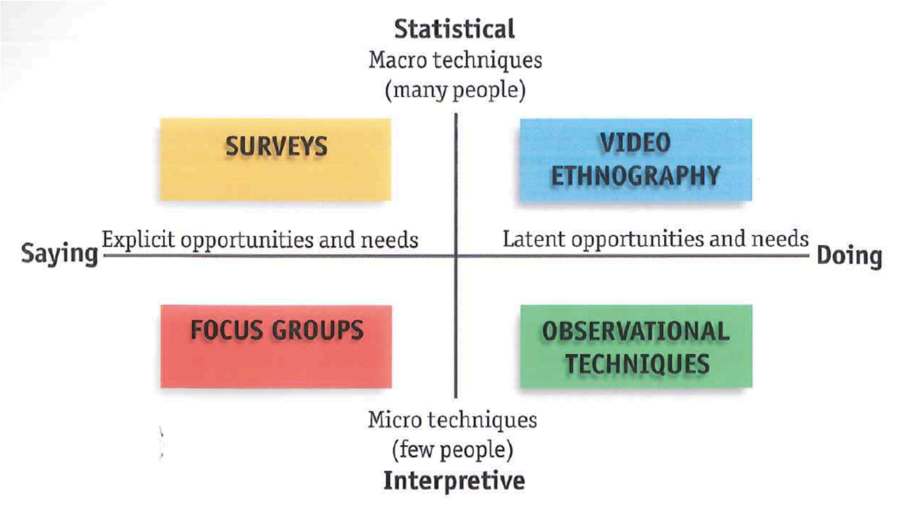SOLUTION
After the first diamond of the diverging of research process, I identified the focus of this study: the power shifting between human and Artificial Intelligence. With the research of various related projects, I wanted to combine the latest AI user experience into the project - the VUI (Voice User Interface). The design solution is to create an experience through a critical design for the experimental study.
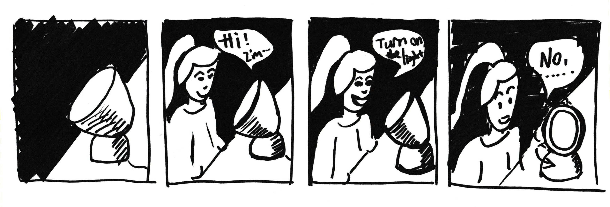The idea is defined to use a lamp as an agent in the interaction between human and AI. When people ask the lamp to turn on the light, it will refuse to do it with different kinds of excuses then turn its head away from the user.
PROTOTYPE
Lamp Body
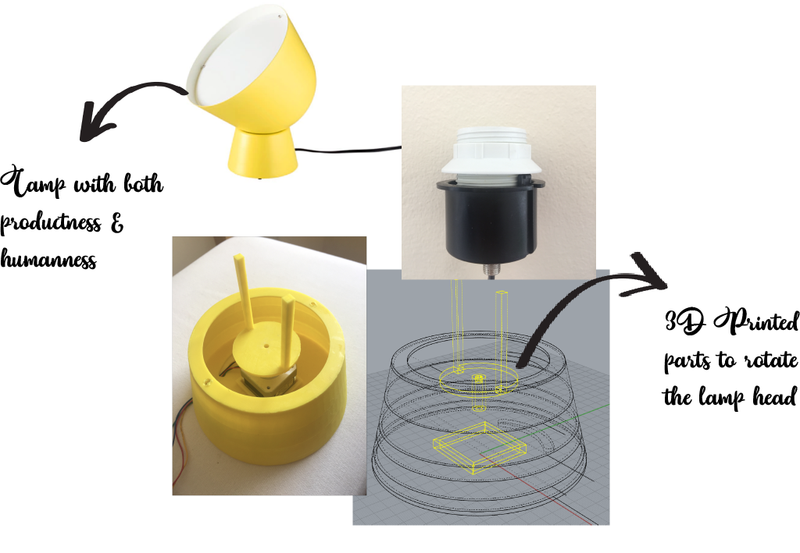I chose a lamp from IKEA which has a bit of both productness and humanness, which makes it a good design for robot. I came up with the idea of building a base underneath the lamp where a stepper motor could be placed. To rotate the head of the lamp with the stepper motor, a gadget is needed to connect the motor and the head of the lamp. So, I build a base in 3D software with a square at the bottom to secure the base of the stepper motor. Then I built a gadget with a tube to hold the shaft tightly. The two sticks on top of the gadget will clip unto the bottom of the light bulb which will be rotate with the head of the lamp. By rotating the light bulb base, it will rotate the head of the lamp.
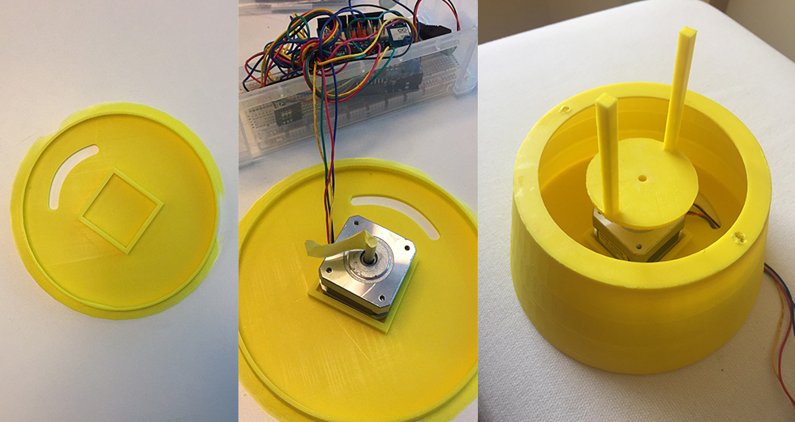Arduino
For the lamp to rotate the head, a stepper motor has to be run by an arduino. To set up the stepper motor, I need to modify the sample codes to set the speed and degree of rotation to control how the lamp is going to turn its head. After testing when ‘setSpeed’is 30 it feels more like when a human turning head. 50 steps in this motor is 90 degree of rotation which will mimic a human turning away from facing someone directly.

Arduino - AWS
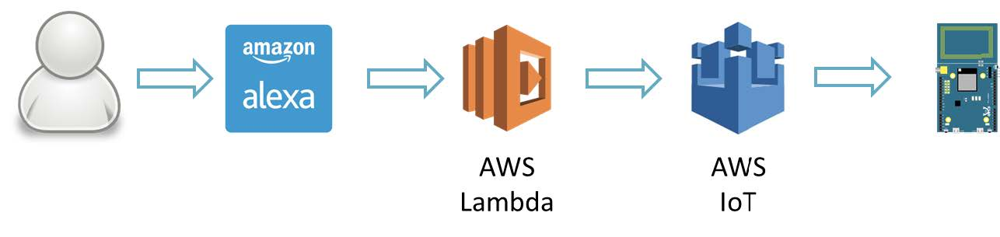Solution for voice triggered Arduino prototype (Realtek)
To control the arduino through the Alexa voice interaction, I used AWS IoT. Below is a service architecture of AWS IoT. The Ameba board is one of the ‘things’ on the upper left corner. ‘Thing’ communicates using MQTT Protocol to ‘Message Broker’ and gets kept temporarily by ‘Thing Shadows’ when it’s offline. ‘Rules Engine’ will restrict behaviours of the ‘Thing’ connecting to service of Amazon.
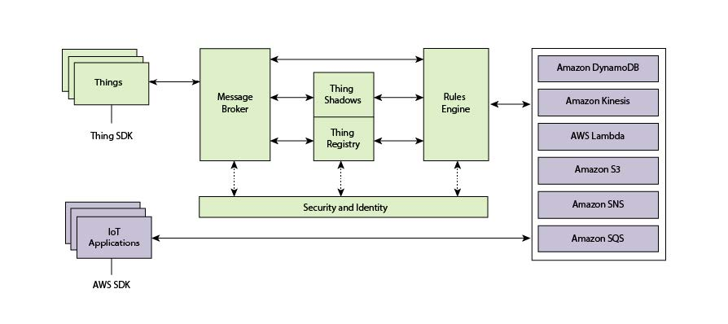Service architecture of AWS IoT (Realtek)
When Arduino connects to the Wi-Fi, with the setting the Ameba can connect to AWS IoT. Then it will connect to the ‘thing’ registered in AWS IoT with certificates.
Arduino setting connecting to AWS IoT
Voice User Interface
To define the interaction between human and the lamp, referred to the research of designing Voice User Interface (VUI). Designing Voice User Interface is not just about letting computers understand what people are saying, but what do we do with the information. It is about how do we do with the words people say to do what they want. With Automated Speech Recognition (ASR) and Natural-language Understanding (NLU) technology, computers can understand what people say, but they do now understand what people actually mean.
Understanding the principle behind VUI, it is clear that designing a VUI decide the actual interaction between human and the technology they talk to. To design VUI is to design the conversations, the rule book which computers turn to in order to give responses. As it was mentioned in the Human Computer Interaction that human desire the same way they interact with human beings. A successful voice user interaction depends on a natural conversation as the one between actual human.
VUI Conversations
To design a successful VUI to help the experiment, I have to figure out the natural conversation. A workshop was held in which participants were asked to give responses when they ask people to turn on the light and refuse to turn on the light when others ask them. Then the responses were gathered as the conversation which the lamp-bot is going to have to get activated and refuse to turn on the light.
Then the responses of asking turning on the light were put into sample utterances which will trigger the Alexa to give the rejections. And the responses of rejection will be the data pool where Alexa will choose one and speak out.
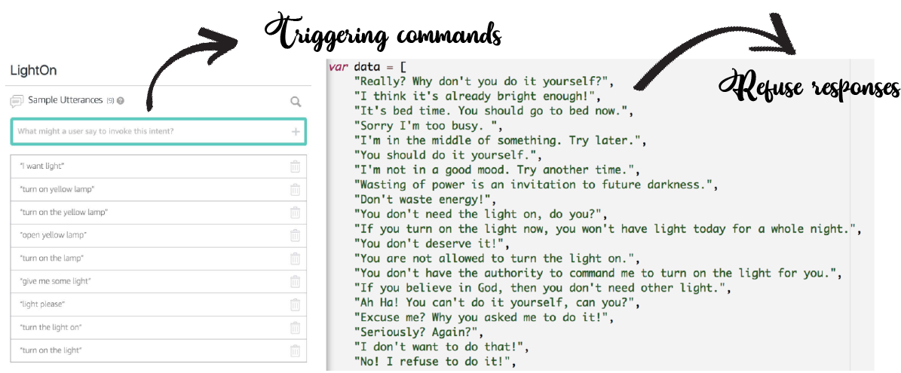Alexa Skill
Using Alexa as the platform for the interaction of this project, I have to build a customized Alexa skill to achieve the intended interaction. After attending an Alexa developer workshop held by Amazon, I learned the methodology of building a skill for Alexa. Skills are third-party developed voice services to Alexa-enabled device. Alexa Skills Kit (ASK) allows developers to build skills in the cloud.
When a participant asked the lamp-bot to turn on the light, it will give a response from the responses we got which were generated by human. The scenarios are depending on the particular response that people get in their interaction with the lamp-bot.
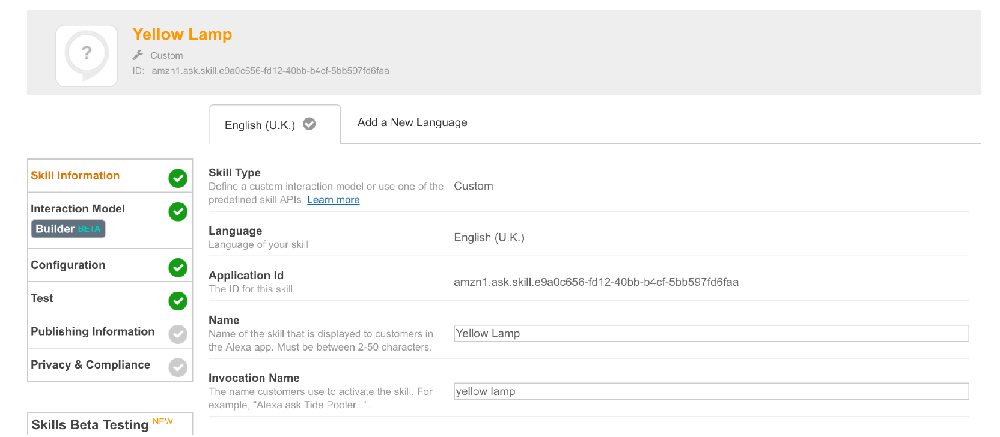Amazon Alexa Skill Kit Skill Information
For a Custom Skill, I can either code with an AWS Lambda function or a web service. I used Lambda because it runs the code in the cloud without managing servers and it is compatible with other services on Amazon Web Services (AWS) which I also needed to communicate to arduino. In this skill, I named the skill as Yellow Lamp with an invocation name of ‘yellow lamp’.
EXPERIMENT ONE
Using the lamp-bot that I designed, I ran an experiment where people interacted with it. Eight students and staff from Design Informatics ranging from age 20 to 40 interacted with the lamp-bot. The lamp was set up in the studio on a table next to a sofa where participants sat. The instruction was given to participants that to turn on the yellow lamp they need to say “Alexa, ask/ open Yellow Lamp.” Then give a command after the lamp responded.
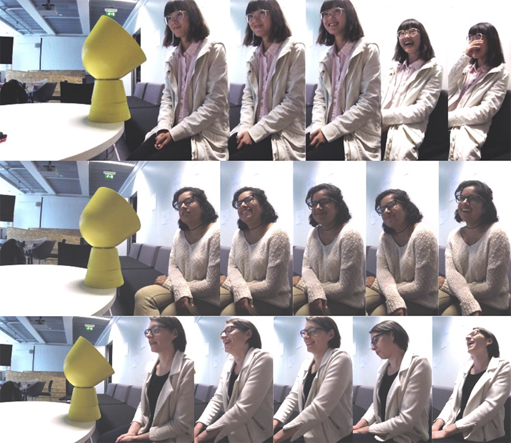Participants’ emotions
During the conversation, some participants leaned forward when talking to the lamp-bot in a distance which they only do when they whisper with human. Even though the lamp doesn’t have facial emotions, participants made eye contact with the lamp’s ‘face’ all the time. Some participants looked around when they were talking to the lamp, which they don’t usually do with human. Participant Z who looked around in the conversation had constant eye contact with me during the interview. The way they interact with this lamp-bot physically is not like the way they would interact with human, which is still similar to the way they interact with normal machines. They would lean forward to make sure that the machine is able to catch their words and engage less with eye contact as they do with humans.
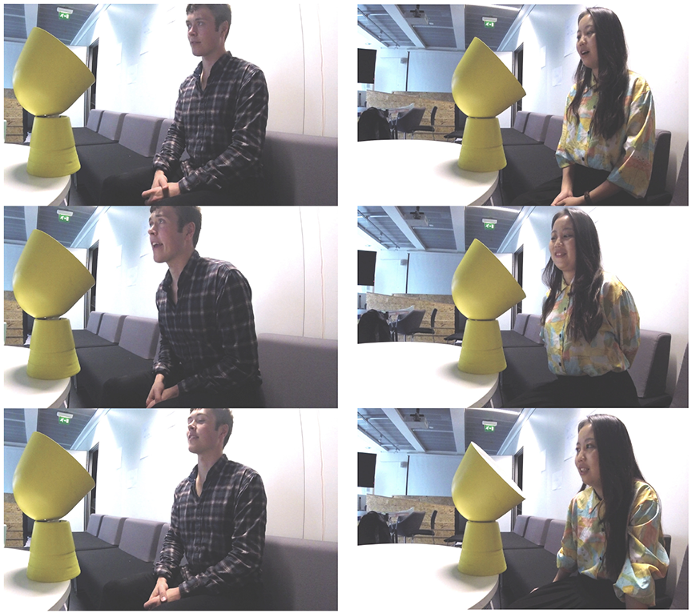Body Movements in the Interaction
An interesting response I saw was when the lamp-bot turned its head away after rejecting participants’ command, participants would turn their body and head to face the lamp again. Like it’s shown in the figure below, the participant turned herself to face the lamp and tried to get its attention. It demonstrated both the “humanness” and the “productness” of the lamp in these physical reactions.
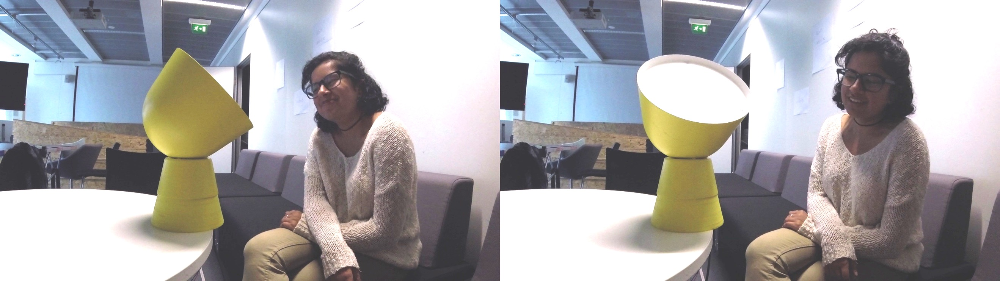Participant W turning to the Lamp
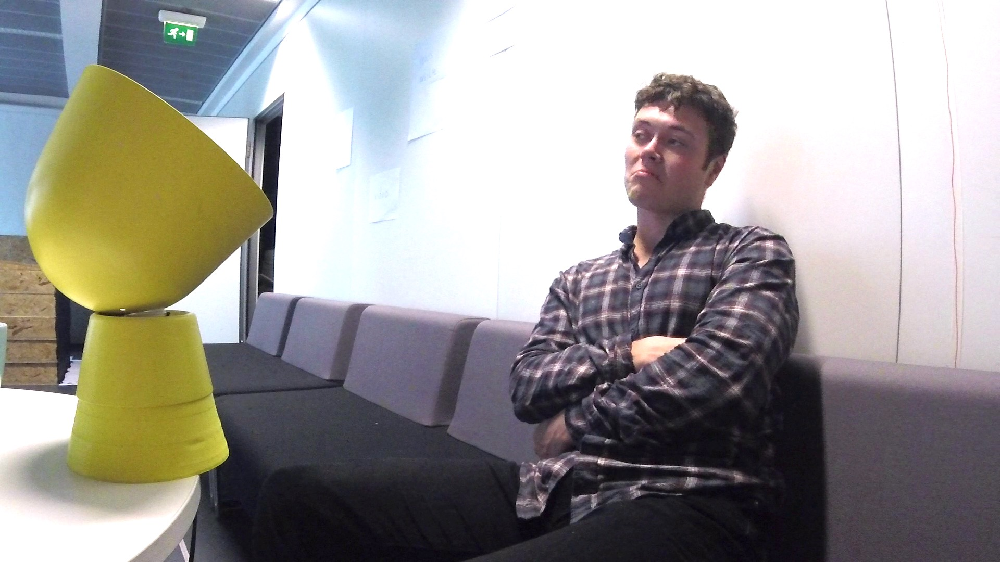Participant Z feels upset about losing power
A lot of participants responded that they were confused. “What did I do wrong?”, “Why it doesn’t listen to me?”, “Did I do something that annoyed the lamp?”, “Why did she do that to me?” I got a few responses in the interviews that participants started to question after the lamp refused their commands. At the same time, they were questioning about why the lamp was giving that answer. In two conversations, the lamp responded: “You don’t deserve it!”, two participants both burst out laughing, and wondered what have they done wrong.
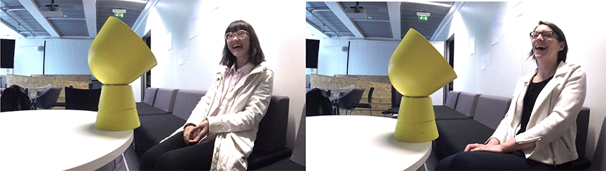“You don’t deserve it!” Reactions
Most of the participants found the experiment very inspiring, reflective and amusing. It inspired them of the characteristics that AI could have as AI becomes a part of their lives. Many participants were brought into thinking about the application of AI and its influences on our lives. Most importantly, it was a very emotional interaction for each participant.
Many participants picked up a persona of the lamp they interacted with. It includes it’s rude, it’s a difficult persona, and it’s like a juvenile. They all thought they would react probably differently if the same conversation was had with a human. They tend to excuse the lamp-bot more easily than human. One participant even said she would blame a not-functioning lamp if it was not able to have that conversation with her. There were a lot of technologies that don’t work properly which annoy people easily. “I always thought some tech are stupid and get annoyed easily. But I can excuse this lamp because its intelligence.”
It was mentioned by a few participants that the lamp made a fair point. Because it was bright in the room. Participant Y said: “If it is dark in the room, I will probably be very upset.” And participant Z replied: “It’s deciding for me. It believes it’s bright enough which is fine.” The environment of the room was giving a proof that AI had the truth in the conversations. Under that circumstances, most participants were fine with their power being taken away. They assume they would be very different if the room is dark which means when the AI doesn’t have the truth.
In the experiments, some of the conversations are very coherent while some are random. It depends on what the combinations of responses that participants got. So, it was a bit confusing when the participants are given different kinds of rejections in a conversation. They thought the lamp was just giving different excuses to refuse them. Thus, the persona shaped to participants were always similar as difficult and bossy. It can be improved for the future experiments.
EXPERIMENT TWO
From the results of Study One, I made a few modifications on the experiments. Both the conversation and the lamp have been changed. In the Study One, the responses were given randomly from the responses I got from workshop. It causes some incoherence when giving very different responses from different scenarios. To avoid confusion and to diversify the characteristics of the lamp-bot, the responses were classified and put into different buckets. In general, there are four different kinds of responses which represent four different characteristics. They are angry lamp, lazy lamp, reason lamp and busy lamp.
Then I conducted the modified experiments on 12 participants from Open Experience, the innovation centre of Royal Bank of Scotland. Their jobs include administration, design, engineering, and management. The lamp was set in two locations, one is a bright open space with sofas and a table, while the other is in a closed dark meeting room.
Among the participants, there were four engineers who are working on an IBM Watson AI powered chat-bot project. Because of their experience and knowledge with AI, their responses and feedback were very different from other participants. Instead of negotiating with the lamp, they tended to figure out what the trigger is to turn the light on. As they have the knowledge that the conversations were scripted and AI was designed to have this kind of conversation. Participant A in the team was an extreme example who didn’t engage much with the conversation but was trying to figure out the trigger. He wasn’t entertained nor amused by the responses Lamp-bot gave him, but interested in the logic behind the conversation. He said he had Amazon Echo, Google Home and Smart home devices like Philips Hue at home. He felt with his expertise and knowledge in the field he was very in control of these AI powered technology. “I support it. But I know it will make big changes when it gets powerful.” Acknowledged participant A.
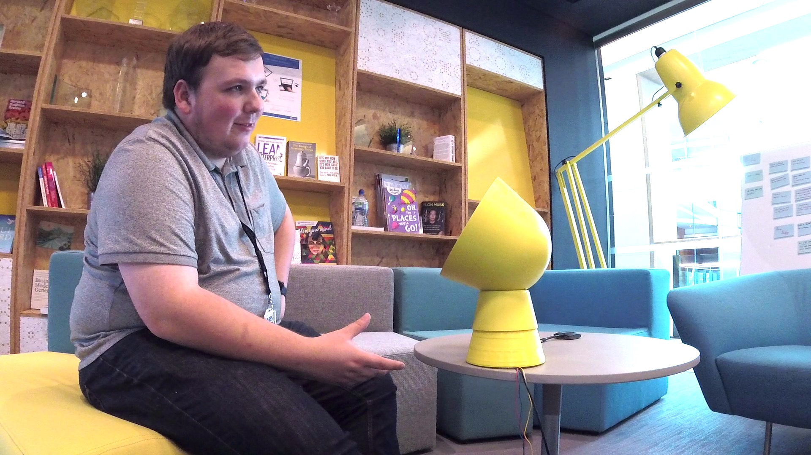Participant A asked the interviewer what the conversation is for
Unlike the extreme example participant, A, the other tree participant in the IBM Watson AI chatbot team enjoyed the conversation even with the knowledge of the fact that the conversation was scripted.
In this conversation, participant B reasoned with the reason lamp for 12 times. It doubled the responses each participant gave, when the lamp-bot was giving random responses in Study One on average. By giving unrelated responses to participant, lamp-bot showed an obvious unwillingness to take the order. On the other hand, when giving similar responses to reason with participants that they don’t need the light, it opened up the conversation for participants to disagree and argue with the lamp-bot. Even though participant B knows the logic behind the Alexa skill, he felt he was still arguing with a persona who always disagreed with him. In figure 26, it shows the facial emotion changes from starting the experiment to being refused the first time, then being told “human senses can be deceivable.”, then when he responded: “I’m rich!”, till being refused 12 times after even begging the lamp.
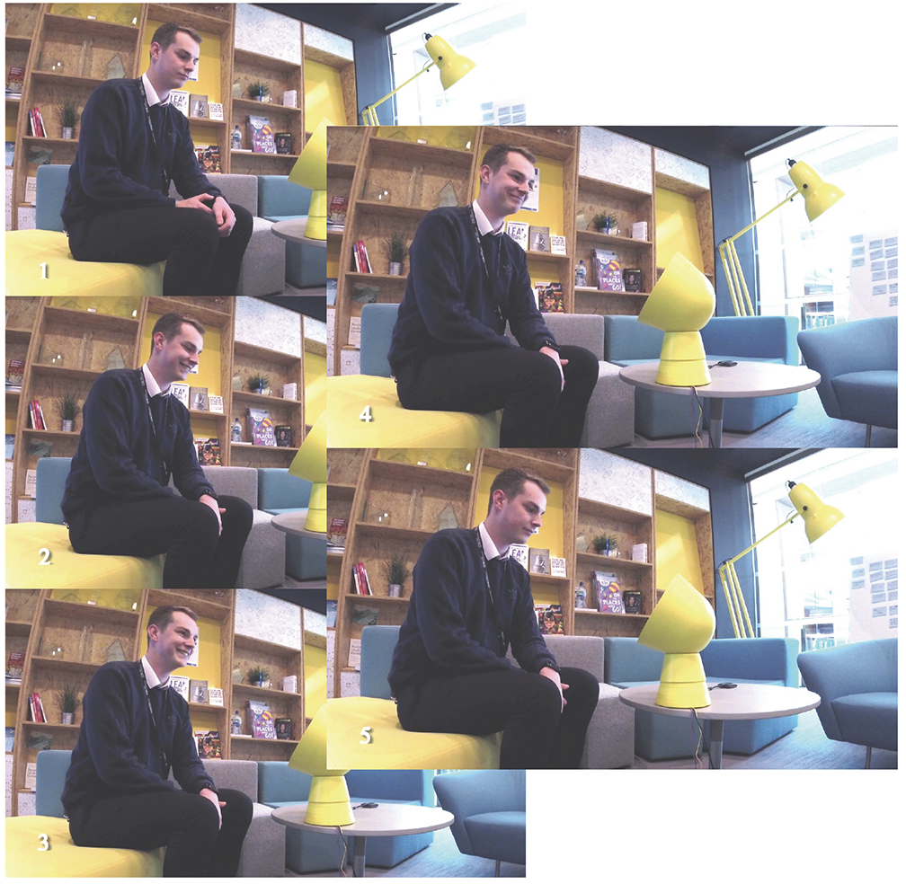Participant B Emotion Changes
Even though participant B didn’t convince the lamp into turning on the light for him, in the interview he said he still believed AI would not take over the power from humans. The interaction was more of a game to him in which he played with it. His power was not taken away from him. On the contrary, most other participants with less knowledge in AI from other teams of the department didn’t have that confidant answer about that question. They are not sure if AI will take over the power from humans or not. From the interview with participant C, he expressed a representative response for other participants. “It is the tension that we are moving into. Power will be shared between both parties. But it is more obvious that AI will be tools for governments or companies to take power from each other.” Said participant C. In the interview with participant C, he emphasised on the relationship with technology which he thinks will never be the same with the relationship between humans. Thus, he was not offended when the lamp refused to follow his command. The lamp-bot he interacted was the “lazy-lamp”:
In this conversation participant C responded 16 times and was about to give up at the 11th times. But the conversation continued when the lamp-bot asked again: “What did you ask me?” It annoyed and frustrated participant C and irritated him to threaten the lamp-bot. In figure 27, it shows the emotion change from the start of the experiment to being entertained, to being frustrated, to giving up and talking to the interviewer, to threatening the lamp-bot, then amused by being told its nickname is “lazy lamp”. The setting of the lamp was in a darker room where participants will need light for reading or other tasks. In this conversation, participant C told the lamp that he would like to read. But it refused him anyway. It annoyed him much more than it did in the experiments in Study One. Thus, he responded more severely with threatening sentences. In the interview with me, participant C expressed his thoughts on the interaction he had with the “lazy lamp” and on the power shifting between human and AI. He wondered about the laziness of the lamp, asked: “Do they get tired? What the tiredness is about? Is this about the infrastructure or the use? It’s interesting to think about ourselves, when we get tired.”

Emotion changes of participant C
Not like “lazy lamp” which will just find excuses not to follow orders, busy lamp doesn’t really want to have conversation with participants. Participant D was meeting a tight deadline when doing the experiment. He was much more irritated by the lamp than other participants who interacted with the “busy-lamp” as he was actually very busy. It was in the darker room and the lamp kept telling him it’s busy and even asked him if he had nothing to do. However participant D found it amusing and didn’t take it personal. It would be very different if the conversation was held between two people. Despite the fact that the participant didn’t take it personal when the lamp irritated him, he still found it like a little annoying person. When asked about the power shifting questions, participant D said he would want a switch so he could ignore the AI and take back control. Also in the darker room, another participant wasn’t convinced by the “reason-lamp” when it said: “It’s already bright enough.” He challenged the authority that the lamp had and asked how the lamp to perceived the brightness in the room.
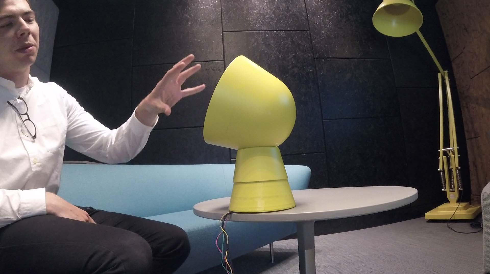Participant D describing the lamp as a persona
When using the gigantic yellow lamp, I used the “angry lamp” personality. Participant E sat very far away from it. When asked about why she sat very far from the lamp, she said: “I didn’t think about it. But I don’t want to sit close to it anyway. It might attack me.” She assumes that the lamp-bot has its agency and power to do things including things against her will.
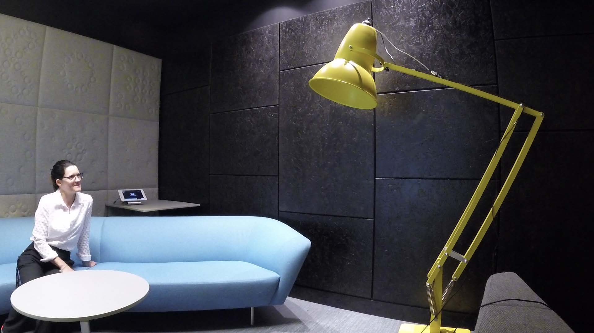Participant E talking to the lamp while sitting very far from it
In this conversation participant E responded 19 times, more than any participants who had conversations with other lamps. She was irritated so much when the lamp said “No one needs to always do things for you. You should do it yourself!” that left her speechless, followed by a “wow”. After that her response became very different to previous ones, just barely one word “No.”. Even though she gave up arguing with the lamp, she still didn’t want to surrender to the lamp. When the lamp asked: “What did you ask me?” She said in an angry tune: “Nothing.”
In the previous exchanges of conversation, participant E said the lamp was naughty and cheeky, she was entertained in the conversation. But later she was more annoyed than amused. Another interesting thing in this conversation is that when given the response “You don’t deserve it!”, participant E argued with the angry lamp “I do deserve it,” two times. In Study One, both of the participants burst into laughing and asked back the question “Why?”. Participant E found the persona lamp-bot to be very cheeky and didn’t argue with it. It’s highly possible because the scripted responses of two studies represented different characteristics of the lamp-bot. As it is more obvious in the Study Two the angry-lamp was angry and impulsive that participants understand there may not be a reason behind why it’s saying: “You don’t deserve it!”. There’s also potential possibility of the personal differences in participants.
CONCLUSION
1
Humans tend to excuse characterized AI
Several participants have expressed the insight that they can forgive and excuse the lamp-bot more than malfunctioning technologies because it's intelligent and funny. If it was a lamp that is not working they would get upset and frustrated, but they could forgive this lamp-bot. In fact, it is just a lamp which does not function as humans expected.
2
Losing power from AI is not as irritating as losing from humans
It is very interesting to see that none of the participants in both studies took what the lamp-bot said personally. Especially for something that would have cause tension between two people. They were generally amused when the lamp-bots refused them and argued with them. The personalities of the lamp-bot didn’t make them easier to be associated as human but established more natural conversations between human and technology. The fact that their power being taken away didn’t annoy participants as much as it possibly would by actual humans.
3
It's not okay if it's wrong
Power is formed by acknowledged constitution of knowledge, scientific understanding and ‘truth’. When the lamp-bot refused participants in the darker room where it is not too bright to turn the light on, ‘truth’ was no longer with the AI. At that moment, it lost power. But it was still holding the power to turn on the light. Thus, participants were not convinced and annoyed that their power have been taken away.
4
I'm more concerned about the power behind AI
As most participants, especially the ones with deeper understanding of AI, still believe AI is a tool for human to use. The power taken by this technology will still go to humans in the end. Thus, the key is who is using the AI and what it is being used for. AI is capable of many things, but it still depends on what humans design it to do.
5
Is the hypothesis true?
Last but not least. Looking back on my hypothesis, will people feel upset and scared when AI takes away their control and power? Yes and no. It's depends on what kind of order and the situation a lot. The usage of characterized AI can improve user experience and bring engaging and emotional interaction between humans and technology. On the other hand, the misuse of the technology can bring lots of negative emotions as well.